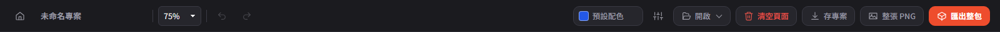
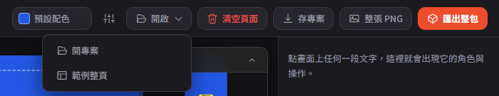
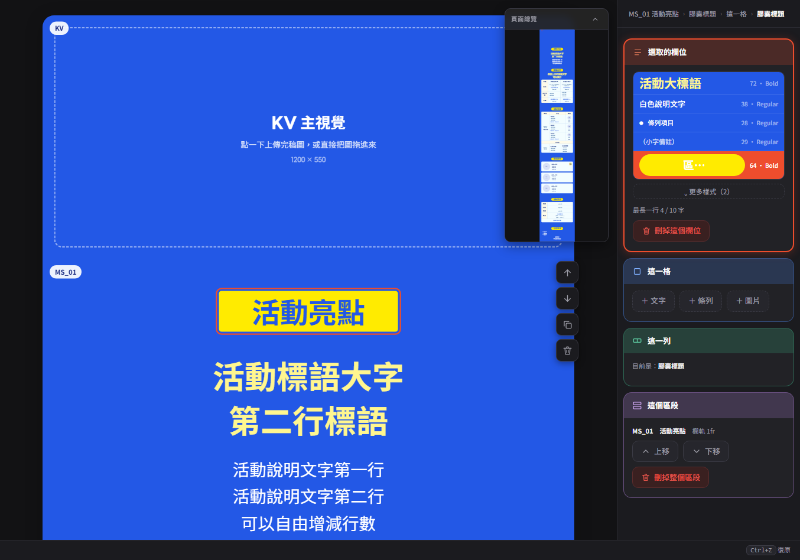
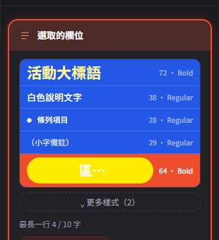
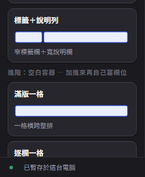
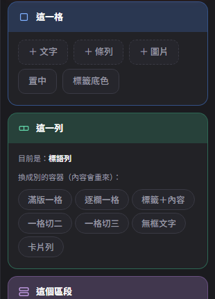
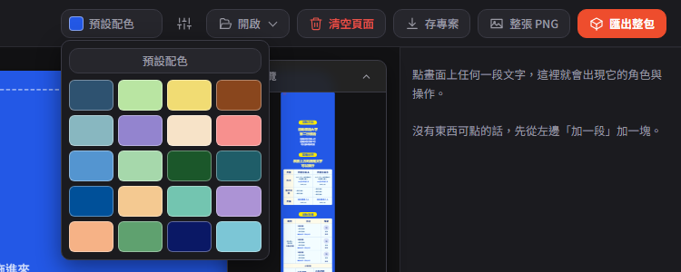
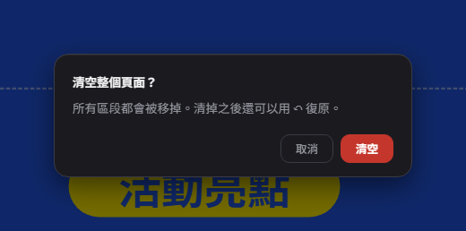

MS 線上編輯器操作手冊
直接在版面上打字、換語意角色、上傳圖，一次做完一整頁活動頁 MS。畫面全部是實機截圖，跟你打開工具看到的一模一樣。
第一次打開怎麼做
全新打開（瀏覽器裡還沒有暫存內容）會自動帶入一套範例整頁（KV＋活動亮點＋票種說明＋活動流程＋賣家顧問＋活動資訊＋注意事項，共 7 段假字），方便你先看完整的一頁長什麼樣子，再把假字換成真正文案。已有上次內容時，重新整理會照原樣還原，不會被範例蓋掉。
頂列工具
由左到右：

- 專案名稱：就地輸入，同時也是「存專案／整張 PNG／匯出整包」三個輸出檔案的檔名。
- 復原／重做：Ctrl Z / Ctrl Shift Z（或 Ctrl Y）。正在畫布上打字時按 Ctrl Z 不會觸發，交給瀏覽器原生的文字還原接手。
- 配色主題：跟 BN 編輯器的 20 個主題連動，見下方「配色跟著 BN 主題走」。
- 清空頁面（紅字）：跳確認、可復原。

「開啟 ▾ → 開專案」選檔後直接覆蓋目前畫面，沒有二次確認——跟「清空頁面」不一樣，開專案前請先確定目前內容已經存檔。
在畫布上直接編輯
點選任何一個欄位，畫布與右欄同時呈現選取狀態：

- 文字：點哪裡就能編輯哪裡；貼上會自動去除原格式；欄位打到全空再按一次 Backspace／Delete 會把欄位整個刪掉（刪到整列只剩最後一欄、且是無框列時連列一起刪）。
- 圖片：空框點一下選檔，或直接拖放圖片檔上去；已有圖的框改成拖曳移動，四角把手等比縮放（20%～300%），右欄也有「－／＋／⟲」按鈕可以不用滑鼠。
切換欄位的語意角色
選到欄位時，右欄最上面會出現一排可點的樣式列，每列用實際字級字重畫樣本字，右邊標真正的規格：

這些數字是逐層量 PSD 校準出來的，只能挑角色、不能自由調字級字重——要更多排版自由度，請用「加一列」換列積木，或打開進階模式。
進階模式
預設關閉，日常只需要「加一段、加一列、打字、換角色」。打開後（狀態會記住）：


「換成別的容器」會讓內容重新排過，跟「加一列」套現成樣式不同，請謹慎使用。
配色跟著 BN 主題走
頂列配色主題選取器直接讀 BN 編輯器那 20 個主題：

左右欄工具外殼顏色不受影響，只有「紙面」本身換色。
存檔與匯出
下載 .json，含版面與圖片。給之後回來繼續編輯用，換電腦打開也完整。
一張拼接好的整頁長圖。臨時要一張預覽或提案時最快。
zip：每段一張 JPG＋一張整張 PNG＋project.json。正式交件用這個。
編輯過程會自動暫存（約 400 毫秒寫入一次），頁尾「● 已暫存於這台電腦」就是這個狀態。但這只是本機暫存，換電腦或清瀏覽器資料就會不見，重要進度請記得按「存專案」。

已知限制
- 2026-09-29 起不再匯出 Excel 工單。如果流程上仍需要正式工單檔案，這支工具目前不提供，請洽專案負責人員。
- 「開啟 ▾ → 開專案」沒有覆蓋確認，選了就直接蓋掉畫面。
- 拖放只支援「把圖片拖到圖片欄位／KV」；不支援拖曳排序區段或列（用浮動列工具列的上移／下移），也不支援把 .json 直接拖進畫布開檔。
- 部分視覺仍在逐步校準：表格線色、部分字級、較新列型／區段都還沒一一對過 PSD。